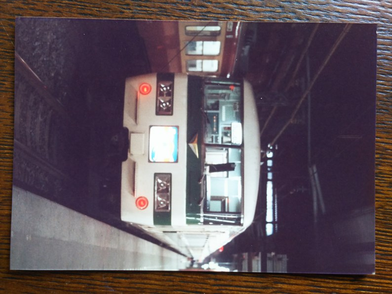

昭和６０年１月３日 大阪駅。
夜明け前っすね。この写真、結構なぞです。最初は
急行立山の到着かと思ったのですが、１１番線なの
で、彗星か明星の到着、あるいは出発前の雷鳥？
正月の臨時かな？
鈍行で名古屋に移動して撮影タイム。
なつかしの３８１系しなの。
キハ８２の南紀。
大阪駅みたいな並びですね。
特急しらさぎ。
こちらも大阪駅みたいですが、こんなん走ってたん
ですね。
浜松までやってきました。
遠州鉄道ですね。
実はこの頃は、今の駅と違って、浜松の手前でカー
ブして馬込駅に到着後、スイッチバックして浜松に
向かってました。
この写真は、その馬込駅でのものです。
しかしこの年の末に、この遠回りルートは廃止され
て今の線形になります。
そういうこともあってか、意外と粗末なつくりの駅
舎です。
馬込のホームから、突き当り側を望んだ１枚。
多分、裏側は次の駅は西鹿島側の駅（遠鉄浜松）に
なってるはずです。

このあと、鈍行で東京に向います。
上野発の夜行に乗るまで、しばし撮影タイム。
この頃は、まだ急行もたくさん残ってたんですね。
でも３月のダイヤ改正でかなり無くなったはずです。
急行なすの。
急行わたらせ。
さっきのなすのと併結列車でした。
このタイプのサボを見ると、ヤフオクでの岩佐の活
躍が思い出されます。
特急白山。
この列車は、１９９７年の長野新幹線開業まで走り続けました。
特急鳥海。
上越新幹線開業の時にできた新しい特急ですが、こ
の年に臨時扱いになってしまいます。
その後は寝台特急になるという変わり種。
特急やまばと。
この山形行の特急も３月に新幹線上野開通したこと
で廃止されます。

特急たにがわ、と思います。
青森行急行八甲田。
急行奥久慈。
常磐線・水郡線経由で郡山まで行ってた急行ですね。
臨時急行の佐渡が到着です。
積まれた雪がいいですね。
特急あかぎ、と思います。
寝台特急ゆうづる。
急行はるな。
残り２か月半となった、新幹線リレー号。
急行まつしま。
急行能登。
客車時代ですね。
２０系急行の、おが。
牽引はゴハチでした。
団体のお座敷列車も停まってました。

寝台特急出羽。
当時はこのスパッと切った断面のような形状がかっ
こいいと思ってましたが、今見ると、イマイチっす
ね。
ゆうづると出羽の並びです。
寝台特急北陸。
これで撮影は終了。
上野発２２：１０の長岡行きの夜行鈍行電車で、いよいよ新潟に向います。
早朝に長岡駅に到着後、新津まで行って磐越西線に乗り換えて五泉駅に到
着。
いよいよ今回の旅のメインイベント、蒲原鉄道の訪問です。
五泉駅の端に、蒲原鉄道のホームがありました。
まずは終点の加茂まで乗り通そうと思います。
五泉駅ではしばらく撮影してますね。
一旦、中心駅の村松まで行ったみたいです。
っちゅうか、直通はなかったんかな。
村松駅。
この車両で加茂に向ったと思います。
加茂駅到着。
国鉄ホームにとまってたＥＦ６４。関西ではなかなか見れない機関車なの
で撮ったと思います。
さて、ここからゆっくり五泉に戻って行きます。
東加茂駅。こっちが加茂の街の中心なのか、かなり
立派な駅舎ですね。
この電車に乗って、次の交換駅の七谷に向います。
七谷駅。
乗ってきた電車が村松に出発していきました。
こんな山間の駅でも、待合室にはストーブが焚かれ
ていました。
かなりの積雪に見えますが、もちろん定時運行です。
どっかのＪＲにも見習ってほしいっすね。
次の電車で、交換駅の大蒲原までやってきました。
ここもえらい雪です。
村松方面から列車がやってきました。
去年の夏に訪れた時は、駅舎も残ってなくて残念で
した。
大蒲原付近を走る電車。
装備も根性もないので、雪中行軍したわけではなく、
駅の近くで撮ったと思います。
村松駅まで戻ってきました。
電気機関車も健在でした。
駅に隣接した車庫。
雪に埋もれてますが、全部現役車両のはずです。
とうとう五泉駅まで戻ってきてしまいました。
これで蒲原鉄道とはお別れです。
このあと、五泉－村松間はしばらく残りますが、再訪することなく
１９９９年の廃線を迎えることになりました。
その後、また鈍行で東京まで戻りました。
長岡からは上野行きの鈍行があって、乗り込んですぐに眠りに落ちて、
最初に気づいたのが高崎、次は他のお客さんに起こされて気づいたら上
野でした。一瞬にして東京に戻ってきた感覚だったのを覚えてます。
次の電車まで、上野駅で撮影タイムです。
時間的にちょうど前日の続き、という感じ。
羽越線経由の秋田行きの２０系急行天の川。
ブルトレのデザインって、やっぱりこのゆうづる・はくつるコンビ
がベストなように思います。
この電源車のデザインも当時はダサダサに思ってましたが、今見る
と愛嬌あっていいっすよね。
このあと、東京駅まで行って、大垣夜行で帰路につきました。
最終日は、なぜか名松線を訪れています。
終着の伊勢奥津。
今回、調べてみておぼろげながら思い出した気もし
てるのですが、最初の訪問の時は、災害で一部不通
だったみたいです。
で、復旧したので再訪したと。

えらいぞ、青年！
で、最後の５枚目は、何に使ったか、記憶も記録も
ありません。
とにかく、中身の濃い３日間でした。